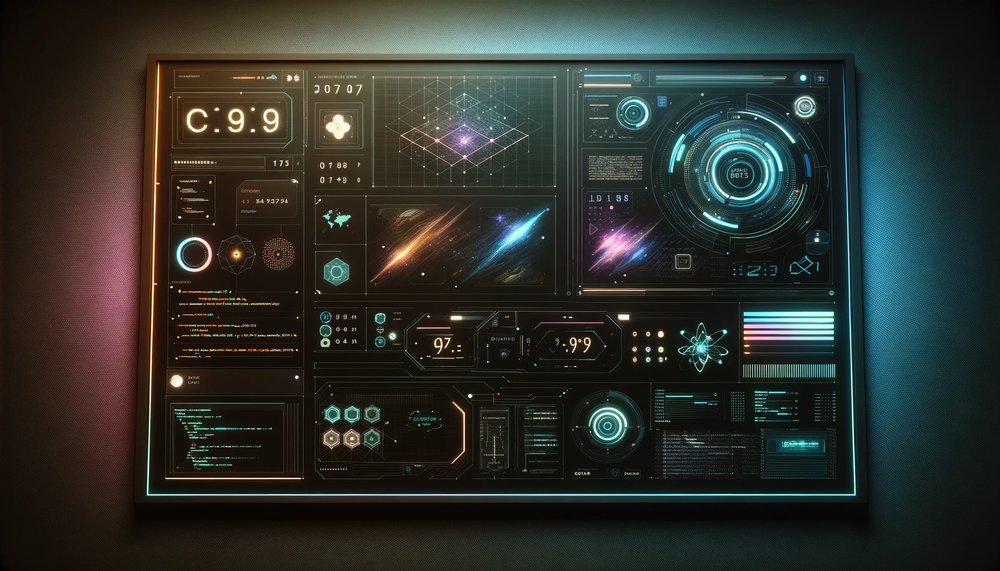

About Me
Hi! I'm Arnaud, a passionate developer with a love for creating elegant and efficient solutions. With a background in music,I have honed my skills in web development, problem-solving, and innovative thinking. My journey into the world of technology has been driven by a desire to build applications that make a difference. Whether it's a sleek website or a robust application, I am committed to delivering high-quality work that exceeds expectations.
I'm a passionate developer with a love for creating elegant and efficient solutions. My journey into the world of technology began with a fascination for problem-solving and innovative thinking. I have a background in media, which has equipped me with a strong foundation in web development, software engineering, and computational logic. Over the years, I have honed my skills in various programming languages and frameworks, allowing me to build robust and scalable applications.
When I'm not coding, I enjoy exploring new technologies, contributing to open-source projects, and staying updated with the latest industry trends. I believe in continuous learning and am always looking for opportunities to expand my knowledge and skill set. In my free time, you can find me reading about scientific developments, experimenting with new programming paradigms, or simply enjoying a good book.
